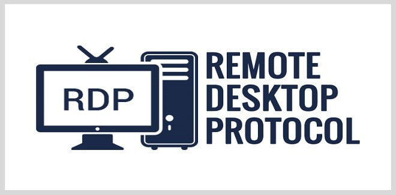
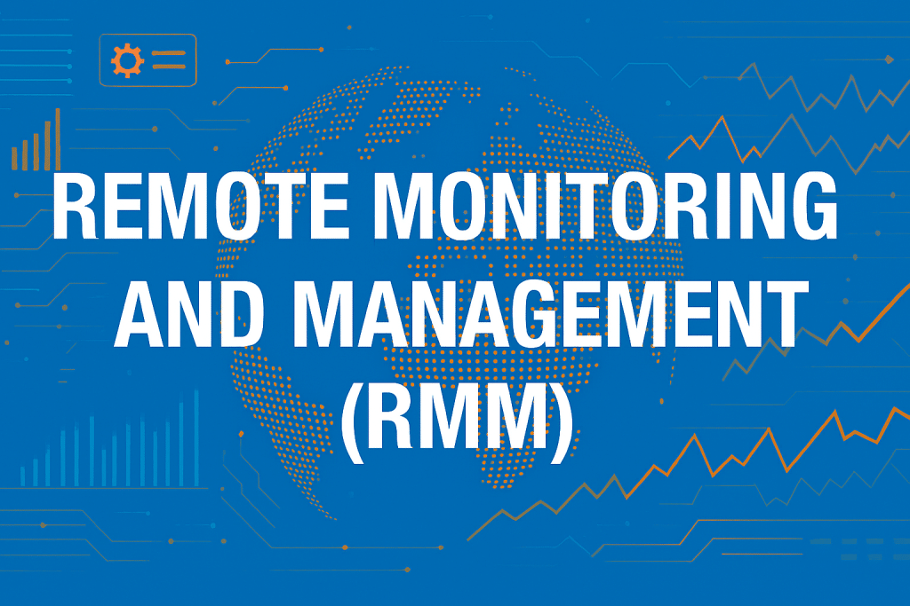
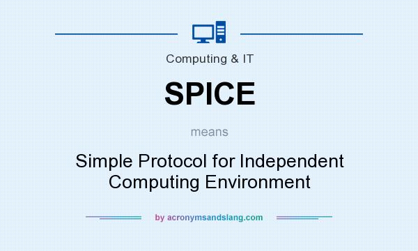

RDP — Remote Desktop Protocol
Proprietary Microsoft protocol providing remote GUI access to desktops and servers across operating systems. Delivers a full interactive desktop session over the network.
Default listener: TCP port 3389.
4.9
Protocols and tools for remote administration, plus security hardening requirements for each access method.
Protocols and platforms used to connect to, monitor, and manage systems remotely.

Proprietary Microsoft protocol providing remote GUI access to desktops and servers across operating systems. Delivers a full interactive desktop session over the network.
Default listener: TCP port 3389.
Encrypts traffic between a remote client and a network VPN concentrator across public networks like the internet.
Available as software clients (OpenVPN, WireGuard, built-in OS clients) or hardware-based next-generation firewall appliances.
Open-source remote desktop solution operating via the Remote Frame Buffer (RFB) protocol across multi-platform environments — Windows, macOS, and Linux.

Terminal-based command-line interface providing encrypted communications to execute remote configuration changes. Replaces unencrypted Telnet.
Default listener: TCP port 22.

Centralized MSP software suite used to monitor, patch, inventory, and manage client networks and endpoints from a single console.
Examples include ConnectWise Automate, Datto RMM, and NinjaOne — agents installed on endpoints report back to a central dashboard.

Lightweight, high-efficiency protocol engineered for seamless graphics rendering, clipboard sharing, and remote access to virtual machines — commonly used with KVM/QEMU virtualization.
Enables administrators to remotely execute scripts and commands on target Windows systems and receive output without establishing an interactive desktop or terminal session.
Foundation for PowerShell remoting (Enter-PSSession, Invoke-Command).
Specialized external utilities classified by operational purpose:
TeamViewer, GoToMyPC — remote desktop access for support and collaboration.
Zoom, Cisco WebEx — meetings, screen share, and remote assistance sessions.
Dropbox, Box.com, Google Drive — cloud-based file sharing and sync.
Citrix Endpoint Management, ManageEngine Desktop Central — enterprise endpoint deployment and policy enforcement.
Hardening requirements and attack vectors for each remote access method.
Listens on default TCP port 3389. Requires multi-factor authentication (MFA) to prevent brute-force attacks and unauthorized system takeovers.
Additional hardening: restrict RDP to VPN-only access, use Network Level Authentication (NLA), and change the default port only as a minor deterrent — not a substitute for MFA.
Requires multi-factor authentication alongside primary credentials to prevent unauthorized network entry via stolen login details.
Keep VPN client software updated and enforce split-tunneling policies according to organizational security requirements.
Vulnerable to brute-force credential attacks if relying solely on basic username/password setups. Requires additional authentication factors and should be tunneled through SSH or VPN when possible.

Listens on TCP port 22. Enhances security by utilizing:
Highly targeted by attackers due to multi-tenant access across multiple customer environments — compromising one RMM console can affect every managed client.
Demands strict access controls, multi-factor authentication, and constant activity auditing.

Requires administrative credential authentication to verify and trust scripts before execution on the remote system. Use HTTPS (port 5986) rather than unencrypted HTTP (port 5985) in production.
Require multi-factor authentication, robust permission controls, and restricted user access to mitigate data leaks and unauthorized remote control.
Audit which third-party tools are approved for organizational use — shadow IT remote access tools are a common entry point for attackers.